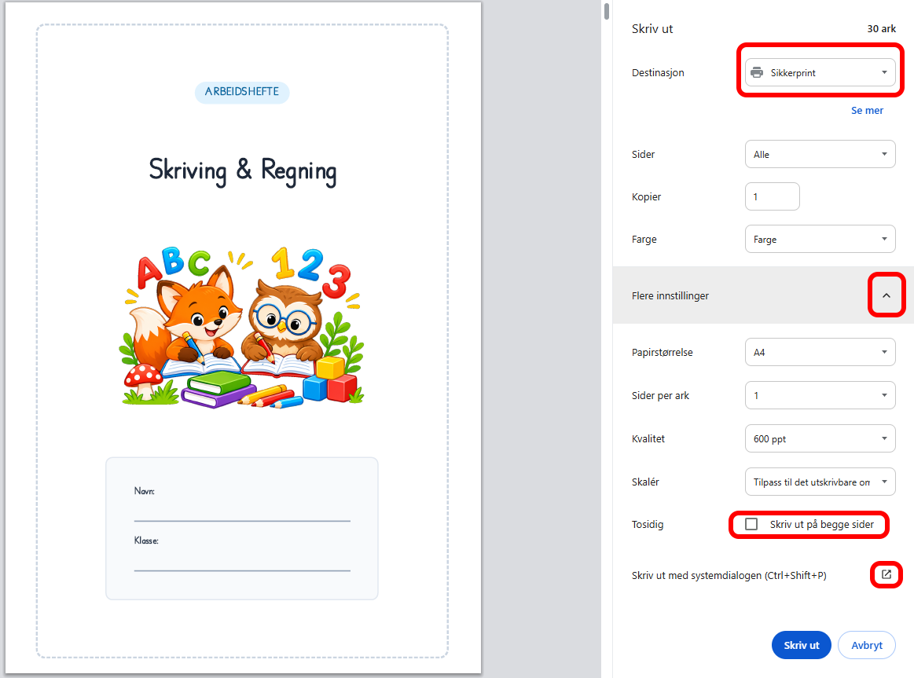
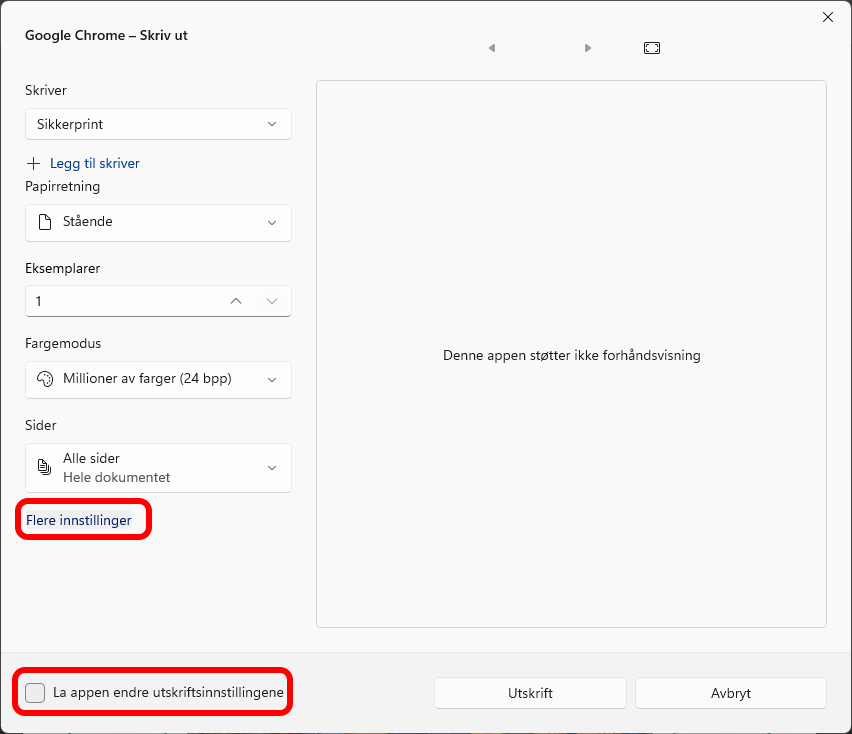
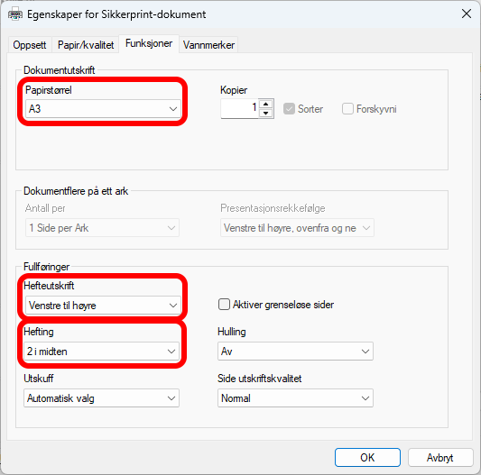
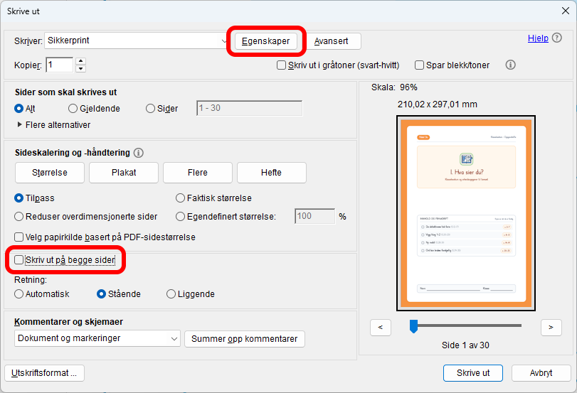

Velg en oppgave i menyen
Tilpass innhold før utskrift
Endringer lagres midlertidig i nettleseren for denne visningen. Trykk «Tilbakestill original» for å hente tilbake data fra filen.
Logg inn for å få tilgang til oppgavearkene
Endringer lagres midlertidig i nettleseren for denne visningen. Trykk «Tilbakestill original» for å hente tilbake data fra filen.
Tema
Veiledning for lagring av PDF og hefteutskrift




Steg 2: Åpne PDF-filen og velg hefteutskrift
Klikk på knappen under for å åpne PDF-en i nettleseren, eller åpne filen direkte i Adobe Reader fra datamaskinen: